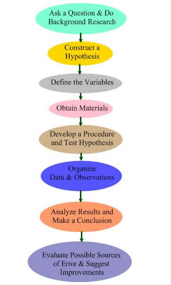

What makes a subject a science? To determine the answer you must ask yourself if the subject is both content and process. Content refers to a collection of known facts and relationships. For example, to accelerate a 20 kg mass 3 m/s2 you will require a greater force than you would if you wanted to accelerate a 12 kg mass 3 m/s2. This relationship can be represented by the formula F = ma where F represents force, m represents mass, and a represents acceleration. F = ma is a known relationship in physics.
Process refers to a systematic way of gathering data, determining relationships, and offering explanations. This process is called the scientific method. Depending on whom you speak with or what you read, there may be from four to eight steps in the scientific method. For the purpose of this course, the scientific method has eight main steps. The description of each step follows.

content: a collection of known facts and relationships
process: a systematic way of gathering data, determining relationships, and offering explanations
(this link opens in a new window/tab)